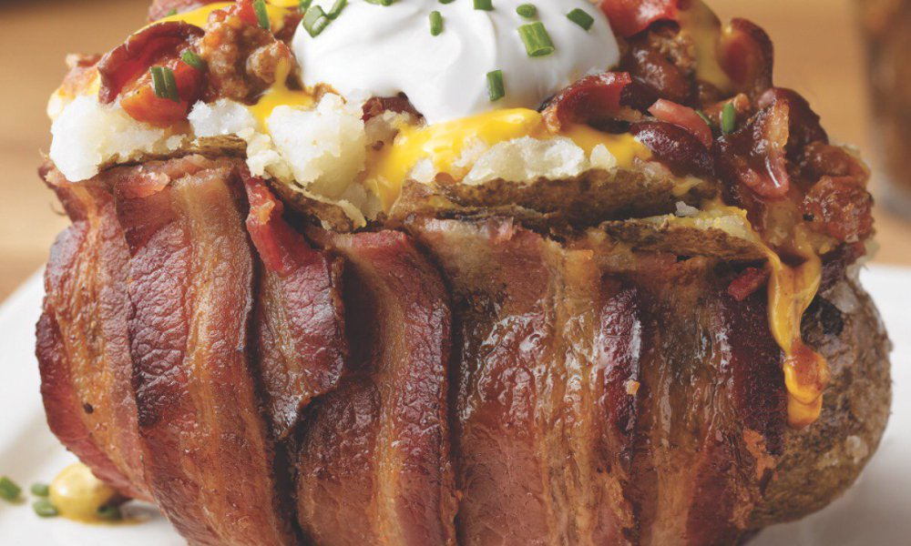

Home of the Potatoes
At Taste Spuds, you will find your favorite spud served like never before. Fried, baked, mashed and fired up.
We have Yukon Gold, Idaho, Sweet, Baby Red and many more. You name it; we've got it. All served savory and delicous.
All selections are from locally grown farmers right here in good ole' Minnesota.